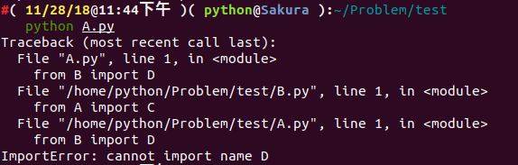

pyc File
在我们导入 python 脚本时在目录下会生成个一个相应的 pyc 文件，是pythoncodeobj的持久化储存形式,加速下一次的装载。
文件结构¶
pyc文件由三大部分组成
-
最开始4个字节是一个Maigc int, 标识此pyc的版本信息
-
接下来四个字节还是个int,是pyc产生的时间
-
序列化的 PyCodeObject,结构参照include/code.h,序列化方法python/marshal
pyc完整的文件解析可以参照
关于co_code
一串二进制流,代表着指令序列,具体定义在include/opcode.h中,也可以参照python opcodes。
由
-
指令(opcode),分为有参数和无参数两种,以 https://github.com/python/cpython/blob/fc7df0e664198cb05cafd972f190a18ca422989c/Include/opcode.h#L69 划分
-
参数(oparg)
python3.6 以上参数永远占1字节,如果指令不带参数的话则以0x00代替,在运行过程中被解释器忽略,也是Stegosaurus技术原理;而低于python3.5的版本中指令不带参数的话却没有0x00填充
例题¶
首先尝试pycdc反编译失败
# Source Generated with Decompyle++
# File: imgenc.pyc (Python 2.7)
import sys
import numpy as np
from scipy.misc import imread, imsave
def doit(input_file, output_file, f):
Unsupported opcode: STOP_CODE
img = imread(input_file, flatten = True)
img /= 255
size = img.shape[0]
# WARNING: Decompyle incomplete
注意到是python2.7,也就是说指令序列共占1字节或3字节(有参数无参数)
使用pcads得到
imgenc.pyc (Python 2.7)
...
67 STOP_CODE
68 STOP_CODE
69 BINARY_DIVIDE
70 JUMP_IF_TRUE_OR_POP 5
73 LOAD_CONST 3: 0
76 LOAD_CONST 3: 0
79 BINARY_DIVIDE
定位到出错的地方,观察发现 LOAD_CONST LOAD_CONST BINARY_DIVIDE STORE_FAST opcodes (64 03 00 64 03 00 15 7d 05 00)被破坏了,根据上下文线索修复后
00000120 64 04 00 6b 00 00 72 ce 00 64 03 00 64 03 00 15 |d..k..r..d..d...|
00000130 7d 05 00 64 03 00 64 03 00 15 7d 05 00 64 03 00 |}..d..d...}..d..|
00000140 64 03 00 15 7d 05 00 64 03 00 64 03 00 15 7d 05 |d...}..d..d...}.|
00000150 00 64 03 00 64 03 00 15 7d 05 00 64 03 00 64 03 |.d..d...}..d..d.|
00000160 00 15 7d 05 00 64 03 00 64 03 00 15 7d 05 00 64 |..}..d..d...}..d|
00000170 03 00 64 03 00 15 7d 05 00 64 03 00 64 03 00 15 |..d...}..d..d...|
00000180 7d 05 00 64 03 00 64 03 00 15 7d 05 00 64 03 00 |}..d..d...}..d..|
00000190 64 03 00 15 7d 05 00 64 03 00 64 03 00 15 7d 05 |d...}..d..d...}.|
000001a0 00 64 03 00 64 03 00 15 7d 05 00 64 03 00 64 03 |.d..d...}..d..d.|
000001b0 00 15 7d 05 00 64 03 00 64 03 00 15 7d 05 00 6e |..}..d..d...}..n|
接下来根据修复好的python源代码得到flag即可
延伸:
- 题目: 0ctf-2017:py
- writeup: 记一次手撸CPython bytecode
Tools¶
pycdc¶
将python字节码转换为可读的python 源代码,包含了反汇编(pycads)和反编译(pycdc)两种工具
Stegosaurus¶
Stegosaurus 是一款隐写工具，它允许我们在 Python 字节码文件( pyc 或 pyo )中嵌入任意 Payload。由于编码密度较低，因此我们嵌入 Payload 的过程既不会改变源代码的运行行为，也不会改变源文件的文件大小。 Payload 代码会被分散嵌入到字节码之中，所以类似 strings 这样的代码工具无法查找到实际的 Payload。 Python 的 dis 模块会返回源文件的字节码，然后我们就可以使用 Stegosaurus 来嵌入 Payload 了。
原理是在 python 的字节码文件中，利用冗余空间，将完整的 payload 代码分散隐藏到这些零零碎碎的空间中。
具体用法可参看 ctf-tools。
例题¶
Bugku QAQ
赛题链接如下：
http://ctf.bugku.com/files/447e4b626f2d2481809b8690613c1613/QAQ
http://ctf.bugku.com/files/5c02892cd05a9dcd1c5a34ef22dd9c5e/cipher.txt
首先拿到这道题，用 010Editor 乍一眼看过去，我们可以看到一些特征信息：

可以判断这是个跟 python 有关的东西，通过查阅相关资料可以判断这是个 python 经编译过后的 pyc 文件。这里可能很多小伙伴们可能不理解了，什么是 pyc 文件呢？为什么会生成 pyc 文件？ pyc 文件又是何时生成的呢？下面我将一一解答这些问题。
简单来说， pyc 文件就是 Python 的字节码文件，是个二进制文件。我们都知道 Python 是一种全平台的解释性语言，全平台其实就是 Python 文件在经过解释器解释之后(或者称为编译)生成的 pyc 文件可以在多个平台下运行，这样同样也可以隐藏源代码。其实， Python 是完全面向对象的语言， Python 文件在经过解释器解释后生成字节码对象 PyCodeObject ， pyc 文件可以理解为是 PyCodeObject 对象的持久化保存方式。而 pyc 文件只有在文件被当成模块导入时才会生成。也就是说， Python 解释器认为，只有 import 进行的模块才需要被重用。 生成 pyc 文件的好处显而易见，当我们多次运行程序时，不需要重新对该模块进行重新的解释。主文件一般只需要加载一次，不会被其他模块导入，所以一般主文件不会生成 pyc 文件。
我们举个例子来说明这个问题：
为了方便起见，我们事先创建一个test文件夹作为此次实验的测试：
mkdir test && cd test/
假设我们现在有个 test.py 文件，文件内容如下：
def print_test():
print('Hello,Kitty!')
print_test()
我们执行以下命令：
python3 test.py
不用说，想必大家都知道打印出的结果是下面这个：
Hello,Kitty!
我们通过下面命令查看下当前文件夹下有哪些文件：
ls -alh

我们可以发现，并没有 pyc 文件生成。
‘我们再去创建一个文件为 import_test.py 文件，文件内容如下：
注：
test.py和import_test.py应当放在同一文件夹下
import test
test.print_test()
我们执行以下命令：
python3 import_test.py
结果如下：
Hello,Kitty!
Hello,Kitty!
诶，为啥会打印出两句相同的话呢？我们再往下看，我们通过下面命令查看下当前文件夹下有哪些文件：
ls -alh
结果如下：
总用量 20K
drwxr-xr-x 3 python python 4.0K 11月 5 20:38 .
drwxrwxr-x 4 python python 4.0K 11月 5 20:25 ..
-rw-r--r-- 1 python python 31 11月 5 20:38 import_test.py
drwxr-xr-x 2 python python 4.0K 11月 5 20:38 __pycache__
-rw-r--r-- 1 python python 58 11月 5 20:28 test.py
诶，多了个 __pycache__ 文件夹，我们进入文件夹下看看有什么？
cd __pycache__ && ls

我们可以看到生成了一个 test.cpython-36.pyc 。为什么是这样子呢？
我们可以看到，我们在执行 python3 import_test.py 命令的时候，首先开始执行的是 import test ，即导入 test 模块，而一个模块被导入时， PVM(Python Virtual Machine) 会在后台从一系列路径中搜索该模块，其搜索过程如下：
- 在当前目录下搜索该模块
- 在环境变量
PYTHONPATH中指定的路径列表中依次搜索 - 在
python安装路径中搜索
事实上， PVM 通过变量 sys.path 中包含的路径来搜索，这个变量里面包含的路径列表就是上面提到的这些路径信息。
模块的搜索路径都放在了 sys.path 列表中，如果缺省的 sys.path 中没有含有自己的模块或包的路径，可以动态的加入 (sys.path.apend) 即可。
事实上， Python 中所有加载到内存的模块都放在 sys.modules 。当 import 一个模块时首先会在这个列表中查找是否已经加载了此模块，如果加载了则只是将模块的名字加入到正在调用 import 的模块的 Local 名字空间中。如果没有加载则从 sys.path 目录中按照模块名称查找模块文件，模块文件可以是 py 、 pyc 、 pyd ，找到后将模块载入内存，并加入到 sys.modules 中，并将名称导入到当前的 Local 名字空间。
可以看出来，一个模块不会重复载入。多个不同的模块都可以用 import 引入同一个模块到自己的 Local 名字空间，其实背后的 PyModuleObject 对象只有一个。
在这里，我还要说明一个问题，import 只能导入模块，不能导入模块中的对象(类、函数、变量等)。例如像上面这个例子，我在 test.py 里面定义了一个函数 print_test() ，我在另外一个模块文件 import_test.py不能直接通过 import test.print_test 将 print_test 导入到本模块文件中，只能用 import test 进行导入。如果我想只导入特定的类、函数、变量，用 from test import print_test 即可。

既然说到了 import 导入机制，再提一提嵌套导入和 Package 导入。
import 嵌套导入
嵌套，不难理解，就是一个套着一个。小时候我们都玩过俄罗斯套娃吧，俄罗斯套娃就是一个大娃娃里面套着一个小娃娃，小娃娃里面还有更小的娃娃，而这个嵌套导入也是同一个意思。假如我们现在有一个模块，我们想要导入模块 A ，而模块 A 中有含有其他模块需要导入，比如模块 B ，模块 B 中又含有模块 C ，一直这样延续下去，这种方式我们称之为 import 嵌套导入。
对这种嵌套比较容易理解，我们需要注意的一点就是各个模块的 Local 名字空间是独立的，所以上面的例子，本模块 import A 完了后，本模块只能访问模块 A ，不能访问 B 及其它模块。虽然模块 B 已经加载到内存了，如果要访问，还必须明确在本模块中导入 import B 。
那如果我们有以下嵌套这种情况，我们该怎么处理呢？
比如我们现在有个模块 A ：
# A.py
from B import D
class C:
pass
还有个模块 B ：
# B.py
from A import C
class D:
pass
我们简单分析一下程序，如果程序运行，应该会去从模块B中调用对象D。
我们尝试执行一下 python A.py ：

报 ImportError 的错误，似乎是没有加载到对象 D ，而我们将 from B import D 改成 import B ，我们似乎就能执行成功了。

这是怎么回事呢？这其实是跟 Python 内部 import 的机制是有关的，具体到 from B import D ， Python 内部会分成以下几个步骤：
- 在
sys.modules中查找符号B - 如果符号
B存在，则获得符号B对应的module对象<module B>。从<module B>的__dict__中获得符号D对应的对象，如果D不存在，则抛出异常 - 如果符号
B不存在，则创建一个新的module对象<module B>，注意，此时module对象的__dict__为空。执行B.py中的表达式，填充<module B>的__dict__。从<module B>的__dict__中获得D对应的对象。如果D不存在，则抛出异常。
所以，这个例子的执行顺序如下：
1、执行 A.py 中的 from B import D
注：由于是执行的
python A.py，所以在sys.modules中并没有<module B>存在，首先为B.py创建一个module对象(<module B>)，注意，这时创建的这个module对象是空的，里边啥也没有，在Python内部创建了这个module对象之后，就会解析执行B.py，其目的是填充<module B>这个dict。
2、执行 B.py 中的 from A import C
注：在执行
B.py的过程中，会碰到这一句，首先检查sys.modules这个module缓存中是否已经存在<module A>了，由于这时缓存还没有缓存<module A>，所以类似的，Python内部会为A.py创建一个module对象(<module A>)，然后，同样地，执行A.py中的语句。
3、再次执行 A.py 中的 from B import D
注：这时，由于在第
1步时，创建的<module B>对象已经缓存在了sys.modules中，所以直接就得到了<module B>，但是，注意，从整个过程来看，我们知道，这时<module B>还是一个空的对象，里面啥也没有，所以从这个module中获得符号D的操作就会抛出异常。如果这里只是import B，由于B这个符号在sys.modules中已经存在，所以是不会抛出异常的。
我们可以从下图很清楚的看到 import 嵌套导入的过程：

Package 导入
包 (Package) 可以看成模块的集合，只要一个文件夹下面有个 __init__.py 文件，那么这个文件夹就可以看做是一个包。包下面的文件夹还可以成为包(子包)。更进一步的讲，多个较小的包可以聚合成一个较大的包。通过包这种结构，我们可以很方便的进行类的管理和维护，也方便了用户的使用。比如 SQLAlchemy 等都是以包的形式发布给用户的。
包和模块其实是很类似的东西，如果查看包的类型： import SQLAlchemy type(SQLAlchemy) ，可以看到其实也是 <type 'module'> 。 import 包的时候查找的路径也是 sys.path。
包导入的过程和模块的基本一致，只是导入包的时候会执行此包目录下的 __init__.py ，而不是模块里面的语句了。另外，如果只是单纯的导入包，而包的 __init__.py 中又没有明确的其他初始化操作，那么此包下面的模块是不会自动导入的。
假设我们有如下文件结构：
.
└── PA
├── __init__.py
├── PB1
│ ├── __init__.py
│ └── pb1_m.py
├── PB2
│ ├── __init__.py
│ └── pb2_m.py
└── wave.py

wave.py ， pb1_m.py ， pb2_m.py 文件中我们均定义了如下函数：
def getName():
pass
__init__.py 文件内容均为空。
我们新建一个 test.py ，内容如下：
import sys
import PA.wave #1
import PA.PB1 #2
import PA.PB1.pb1_m as m1 #3
import PA.PB2.pb2_m #4
PA.wave.getName() #5
m1.getName() #6
PA.PB2.pb2_m.getName() #7
我们运行以后，可以看出是成功执行成功了，我们再看看目录结构：
.
├── PA
│ ├── __init__.py
│ ├── __init__.pyc
│ ├── PB1
│ │ ├── __init__.py
│ │ ├── __init__.pyc
│ │ ├── pb1_m.py
│ │ └── pb1_m.pyc
│ ├── PB2
│ │ ├── __init__.py
│ │ ├── __init__.pyc
│ │ ├── pb2_m.py
│ │ └── pb2_m.pyc
│ ├── wave.py
│ └── wave.pyc
└── test.py

我们来分析一下这个过程：
- 当执行
#1后，sys.modules会同时存在PA、PA.wave两个模块，此时可以调用PA.wave的任何类或函数了。但不能调用PA.PB1(2)下的任何模块。当前Local中有了PA名字。 - 当执行
#2后，只是将PA.PB1载入内存，sys.modules中会有PA、PA.wave、PA.PB1三个模块，但是PA.PB1下的任何模块都没有自动载入内存，此时如果直接执行PA.PB1.pb1_m.getName()则会出错，因为PA.PB1中并没有pb1_m。当前Local中还是只有PA名字，并没有PA.PB1名字。 - 当执行
#3后，会将PA.PB1下的pb1_m载入内存，sys.modules中会有PA、PA.wave、PA.PB1、PA.PB1.pb1_m四个模块，此时可以执行PA.PB1.pb1_m.getName()了。由于使用了as，当前Local中除了PA名字，另外添加了m1作为PA.PB1.pb1_m的别名。 - 当执行
#4后，会将PA.PB2、PA.PB2.pb2_m载入内存，sys.modules中会有PA、PA.wave、PA.PB1、PA.PB1.pb1_m、PA.PB2、PA.PB2.pb2_m六个模块。当前Local中还是只有PA、m1。 - 下面的
#5，#6，#7都是可以正确运行的。
注：需要注意的问题是如果
PA.PB2.pb2_m想导入PA.PB1.pb1_m、PA.wave是可以直接成功的。最好是采用明确的导入路径，对于../..相对导入路径还是不推荐使用。
既然我们已经知道 pyc 文件的产生，再回到那道赛题，我们尝试将 pyc 文件反编译回 python 源码。我们使用在线的开源工具进行尝试：

部分代码没有反编译成功？？？我们可以尝试分析一下，大概意思就是读取 cipher.txt 那个文件，将那个文件内容是通过 base64 编码的，我们的目的是将文件内容解码，然后又已知 key ，通过 encryt 函数进行加密的，我们可以尝试将代码补全：
def encryt(key, plain):
cipher = ''
for i in range(len(plain)):
cipher += chr(ord(key[i % len(key)]) ^ ord(plain[i]))
return cipher
def getPlainText():
plain = ''
with open('cipher.txt') as (f):
while True:
line = f.readline()
if line:
plain += line
else:
break
return plain.decode('base_64')
def main():
key = 'LordCasser'
plain = getPlainText()
cipher = encryt(key, plain)
with open('xxx.txt', 'w') as (f):
f.write(cipher)
if __name__ == '__main__':
main()
结果如下：
YOU ARE FOOLED
THIS IS NOT THAT YOU WANT
GO ON DUDE
CATCH THAT STEGOSAURUS
提示告诉我们用 STEGOSAURUS 工具进行隐写的，我们直接将隐藏的payload分离出来即可。
python3 stegosaurus.py -x QAQ.pyc

我们得到了最终的 flag 为：flag{fin4lly_z3r0_d34d}
既然都说到这个份子上了，我们就来分析一下我们是如何通过 Stegosaurus 来嵌入 Payload 。
我们仍然以上面这个代码为例子，我们设置脚本名称为 encode.py 。
第一步，我们使用 Stegosaurus 来查看在不改变源文件 (Carrier) 大小的情况下，我们的 Payload 能携带多少字节的数据：
python3 -m stegosaurus encode.py -r

现在，我们可以安全地嵌入最多24个字节的 Payload 了。如果不想覆盖源文件的话，我们可以使用 -s 参数来单独生成一个嵌入了 Payload 的 py 文件：
python3 -m stegosaurus encode.py -s --payload "flag{fin4lly_z3r0_d34d}"

现在我们可以用 ls 命令查看磁盘目录，嵌入了 Payload 的文件( carrier 文件)和原始的字节码文件两者大小是完全相同的：

注：如果没有使用
-s参数，那么原始的字节码文件将会被覆盖。
我们可以通过向 Stegosaurus 传递 -x 参数来提取出 Payload ：
python3 -m stegosaurus __pycache__/encode.cpython-36-stegosaurus.pyc -x

我们构造的 Payload 不一定要是一个 ASCII 字符串， shellcode 也是可以的：

我们重新编写一个 example.py 模块，代码如下：
import sys
import os
import math
def add(a,b):
return int(a)+int(b)
def sum1(result):
return int(result)*3
def sum2(result):
return int(result)/3
def sum3(result):
return int(result)-3
def main():
a = 1
b = 2
result = add(a,b)
print(sum1(result))
print(sum2(result))
print(sum3(result))
if __name__ == "__main__":
main()
我们让它携带 Payload 为 flag_is_here。

我们可以查看嵌入 Payload 之前和之后的 Python 代码运行情况：

通过 strings 查看 Stegosaurus 嵌入了 Payload 之后的文件输出情况( payload 并没有显示出来)：

接下来使用 Python 的 dis 模块来查看 Stegosaurus 嵌入 Payload 之前和之后的文件字节码变化情况：
嵌入payload之前：
#( 11/29/18@ 5:14下午 )( python@Sakura ):~/桌面
python3 -m dis example.py
1 0 LOAD_CONST 0 (0)
2 LOAD_CONST 1 (None)
4 IMPORT_NAME 0 (sys)
6 STORE_NAME 0 (sys)
2 8 LOAD_CONST 0 (0)
10 LOAD_CONST 1 (None)
12 IMPORT_NAME 1 (os)
14 STORE_NAME 1 (os)
3 16 LOAD_CONST 0 (0)
18 LOAD_CONST 1 (None)
20 IMPORT_NAME 2 (math)
22 STORE_NAME 2 (math)
4 24 LOAD_CONST 2 (<code object add at 0x7f90479778a0, file "example.py", line 4>)
26 LOAD_CONST 3 ('add')
28 MAKE_FUNCTION 0
30 STORE_NAME 3 (add)
6 32 LOAD_CONST 4 (<code object sum1 at 0x7f9047977810, file "example.py", line 6>)
34 LOAD_CONST 5 ('sum1')
36 MAKE_FUNCTION 0
38 STORE_NAME 4 (sum1)
9 40 LOAD_CONST 6 (<code object sum2 at 0x7f9047977ae0, file "example.py", line 9>)
42 LOAD_CONST 7 ('sum2')
44 MAKE_FUNCTION 0
46 STORE_NAME 5 (sum2)
12 48 LOAD_CONST 8 (<code object sum3 at 0x7f9047977f60, file "example.py", line 12>)
50 LOAD_CONST 9 ('sum3')
52 MAKE_FUNCTION 0
54 STORE_NAME 6 (sum3)
15 56 LOAD_CONST 10 (<code object main at 0x7f904798c300, file "example.py", line 15>)
58 LOAD_CONST 11 ('main')
60 MAKE_FUNCTION 0
62 STORE_NAME 7 (main)
23 64 LOAD_NAME 8 (__name__)
66 LOAD_CONST 12 ('__main__')
68 COMPARE_OP 2 (==)
70 POP_JUMP_IF_FALSE 78
24 72 LOAD_NAME 7 (main)
74 CALL_FUNCTION 0
76 POP_TOP
>> 78 LOAD_CONST 1 (None)
80 RETURN_VALUE
嵌入 payload 之后：
#( 11/29/18@ 5:31下午 )( python@Sakura ):~/桌面
python3 -m dis example.py
1 0 LOAD_CONST 0 (0)
2 LOAD_CONST 1 (None)
4 IMPORT_NAME 0 (sys)
6 STORE_NAME 0 (sys)
2 8 LOAD_CONST 0 (0)
10 LOAD_CONST 1 (None)
12 IMPORT_NAME 1 (os)
14 STORE_NAME 1 (os)
3 16 LOAD_CONST 0 (0)
18 LOAD_CONST 1 (None)
20 IMPORT_NAME 2 (math)
22 STORE_NAME 2 (math)
4 24 LOAD_CONST 2 (<code object add at 0x7f146e7038a0, file "example.py", line 4>)
26 LOAD_CONST 3 ('add')
28 MAKE_FUNCTION 0
30 STORE_NAME 3 (add)
6 32 LOAD_CONST 4 (<code object sum1 at 0x7f146e703810, file "example.py", line 6>)
34 LOAD_CONST 5 ('sum1')
36 MAKE_FUNCTION 0
38 STORE_NAME 4 (sum1)
9 40 LOAD_CONST 6 (<code object sum2 at 0x7f146e703ae0, file "example.py", line 9>)
42 LOAD_CONST 7 ('sum2')
44 MAKE_FUNCTION 0
46 STORE_NAME 5 (sum2)
12 48 LOAD_CONST 8 (<code object sum3 at 0x7f146e703f60, file "example.py", line 12>)
50 LOAD_CONST 9 ('sum3')
52 MAKE_FUNCTION 0
54 STORE_NAME 6 (sum3)
15 56 LOAD_CONST 10 (<code object main at 0x7f146e718300, file "example.py", line 15>)
58 LOAD_CONST 11 ('main')
60 MAKE_FUNCTION 0
62 STORE_NAME 7 (main)
23 64 LOAD_NAME 8 (__name__)
66 LOAD_CONST 12 ('__main__')
68 COMPARE_OP 2 (==)
70 POP_JUMP_IF_FALSE 78
24 72 LOAD_NAME 7 (main)
74 CALL_FUNCTION 0
76 POP_TOP
>> 78 LOAD_CONST 1 (None)
80 RETURN_VALUE
注：
Payload的发送和接受方法完全取决于用户个人喜好，Stegosaurus只提供了一种向Python字节码文件嵌入或提取Payload的方法。但是为了保证嵌入之后的代码文件大小不会发生变化，因此Stegosaurus所支持嵌入的Payload字节长度十分有限。因此 ，如果你需要嵌入一个很大的Payload，那么你可能要将其分散存储于多个字节码文件中了。
为了在不改变源文件大小的情况下向其嵌入 Payload ，我们需要识别出字节码中的无效空间( Dead Zone )。这里所谓的无效空间指的是那些即使被修改也不会改变原 Python 脚本正常行为的那些字节数据。
需要注意的是，我们可以轻而易举地找出 Python3.6 代码中的无效空间。 Python 的引用解释器 CPython 有两种类型的操作码：即无参数的和有参数的。在版本号低于 3.5 的 Python 版本中，根据操作码是否带参，字节码中的操作指令将需要占用 1 个字节或 3 个字节。在 Python3.6 中就不一样了， Python3.6 中所有的指令都占用 2 个字节，并会将无参数指令的第二个字节设置为 0 ，这个字节在其运行过程中将会被解释器忽略。这也就意味着，对于字节码中每一个不带参数的操作指令， Stegosaurus 都可以安全地嵌入长度为 1 个字节的 Payload 代码。
我们可以通过 Stegosaurus 的 -vv 选项来查看 Payload 是如何嵌入到这些无效空间之中的：
#( 11/29/18@10:35下午 )( python@Sakura ):~/桌面
python3 -m stegosaurus example.py -s -p "ABCDE" -vv
2018-11-29 22:36:26,795 - stegosaurus - DEBUG - Validated args
2018-11-29 22:36:26,797 - stegosaurus - INFO - Compiled example.py as __pycache__/example.cpython-36.pyc for use as carrier
2018-11-29 22:36:26,797 - stegosaurus - DEBUG - Read header and bytecode from carrier
2018-11-29 22:36:26,798 - stegosaurus - DEBUG - POP_TOP (0)
2018-11-29 22:36:26,798 - stegosaurus - DEBUG - POP_TOP (0)
2018-11-29 22:36:26,798 - stegosaurus - DEBUG - POP_TOP (0)
2018-11-29 22:36:26,798 - stegosaurus - DEBUG - RETURN_VALUE (0)
2018-11-29 22:36:26,798 - stegosaurus - DEBUG - BINARY_SUBTRACT (0)
2018-11-29 22:36:26,798 - stegosaurus - DEBUG - RETURN_VALUE (0)
2018-11-29 22:36:26,798 - stegosaurus - DEBUG - BINARY_TRUE_DIVIDE (0)
2018-11-29 22:36:26,798 - stegosaurus - DEBUG - RETURN_VALUE (0)
2018-11-29 22:36:26,798 - stegosaurus - DEBUG - BINARY_MULTIPLY (0)
2018-11-29 22:36:26,798 - stegosaurus - DEBUG - RETURN_VALUE (0)
2018-11-29 22:36:26,798 - stegosaurus - DEBUG - BINARY_ADD (0)
2018-11-29 22:36:26,798 - stegosaurus - DEBUG - RETURN_VALUE (0)
2018-11-29 22:36:26,798 - stegosaurus - DEBUG - POP_TOP (0)
2018-11-29 22:36:26,798 - stegosaurus - DEBUG - RETURN_VALUE (0)
2018-11-29 22:36:26,798 - stegosaurus - INFO - Found 14 bytes available for payload
Payload embedded in carrier
2018-11-29 22:36:26,799 - stegosaurus - DEBUG - POP_TOP (65) ----A
2018-11-29 22:36:26,799 - stegosaurus - DEBUG - POP_TOP (66) ----B
2018-11-29 22:36:26,799 - stegosaurus - DEBUG - POP_TOP (67) ----C
2018-11-29 22:36:26,799 - stegosaurus - DEBUG - RETURN_VALUE (68) ----D
2018-11-29 22:36:26,799 - stegosaurus - DEBUG - BINARY_SUBTRACT (69) ----E
2018-11-29 22:36:26,799 - stegosaurus - DEBUG - RETURN_VALUE (0)
2018-11-29 22:36:26,799 - stegosaurus - DEBUG - BINARY_TRUE_DIVIDE (0)
2018-11-29 22:36:26,799 - stegosaurus - DEBUG - RETURN_VALUE (0)
2018-11-29 22:36:26,799 - stegosaurus - DEBUG - BINARY_MULTIPLY (0)
2018-11-29 22:36:26,799 - stegosaurus - DEBUG - RETURN_VALUE (0)
2018-11-29 22:36:26,799 - stegosaurus - DEBUG - BINARY_ADD (0)
2018-11-29 22:36:26,799 - stegosaurus - DEBUG - RETURN_VALUE (0)
2018-11-29 22:36:26,799 - stegosaurus - DEBUG - POP_TOP (0)
2018-11-29 22:36:26,799 - stegosaurus - DEBUG - RETURN_VALUE (0)
2018-11-29 22:36:26,799 - stegosaurus - DEBUG - Creating new carrier file name for side-by-side install
2018-11-29 22:36:26,799 - stegosaurus - INFO - Wrote carrier file as __pycache__/example.cpython-36-stegosaurus.pyc
Challenges: WHCTF-2017:Py-Py-Py
参考文献¶
本页面的全部内容在 CC BY-NC-SA 4.0 协议之条款下提供，附加条款亦可能应用。